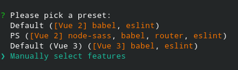

Vue, primeros pasos¶
Instalación de VueJS¶
La instalación de VueJS puede realizarse de muchas maneras. Todos los métodos disponibles para instalar la herramienta se encuentra en el siguiente enlace.
Para esta guía y como recomendación para el trabajo vamos a realizar la instalación de la
herramienta vue-cli que nos permitirá tener armar una configuración inicial para nuestro
proyecto VueJS. La guía de la misma la pueden encontrar aquí
Siguiendo la guía para instalar la herramienta vue-cli hacemos:
# con yarn
yarn global add @vue/cli
O si usamos npm:
# con npm
npm install -g @vue/cli
Una vez terminada la instalación miramos si ya está disponible el comando:
❯ vue --version
@vue/cli 4.5.15
Warning
Tal vez esto requiera de reiniciar su terminal
Creando el template inicial¶
La documentación oficial para el uso de la herramienta vue-cli la encontramos aquí
Para crear un nuevo proyecto debemos utilizar el comando vue create <nombre> que
nos permitirá crear un nuevo proyecto de forma interactiva:
Info
Instalar la versión 3 de VueJS y usar el manejador de paquetes que ya tengan instalado en su máquina (yarn o npm)
Luego van a aparecer 3 opciones, una default para Vue2 otra default para Vue 3 y seleccion manual de las funcionalidades:

Vamos a elegir la manual con las siguientes opciones:

Babel es una cadena de herramientas que se utiliza principalmente para convertir el código ECMAScript 2015+ en una versión de JavaScript compatible con versiones anteriores en navegadores o entornos actuales y antiguos.
Router VueRouter es el enrutador oficial de VueJS, permite generar rutas dinamicas para diferentes componentes.
Linter/Formatter ESLint analiza estáticamente en base a diferentes reglas el código para encontrar rápidamente problemas y a su vez se puede configurar para que cuando se guarde un archivo arregle problemas de sintaxis como por ejemplo Black en python.
Por ultimo tenemos que elegir la version de VueJS en este caso vamos por la version 3.x

Warning
Recordar que tenemos que crear nuestro proyecto dentro de la carpeta web para que nuestra aplicación se pueda buildear
y ejecutar correctamente en el servidor.
Terminado el comando deberíamos ver algo como esto:

Con el proyecto creado vamos a intentar levantar el server localmente ejecutando el siguiente comando:
Levantado el servidor abrimos la aplicación en el puerto 8080 del navegador.

El directorio de la aplicación nos quedó con los siguientes archivos y directorios:
El proyecto ya tiene su propio git ignore donde evita versionar archivos como el node_modules.
Tener en cuenta de agregar los directorios que queramos ignorar más adelante.
Subir los cambios al servidor¶
Para subir los cambios tenemos que agregar los archivos nuevos.

Luego hacer un commit y un push a master.
El servidor va a tardar unos minutos en hacer el build. Más que nada si es la primera vez. Luego de un rato deberíamos ver los cambios en el servidor: